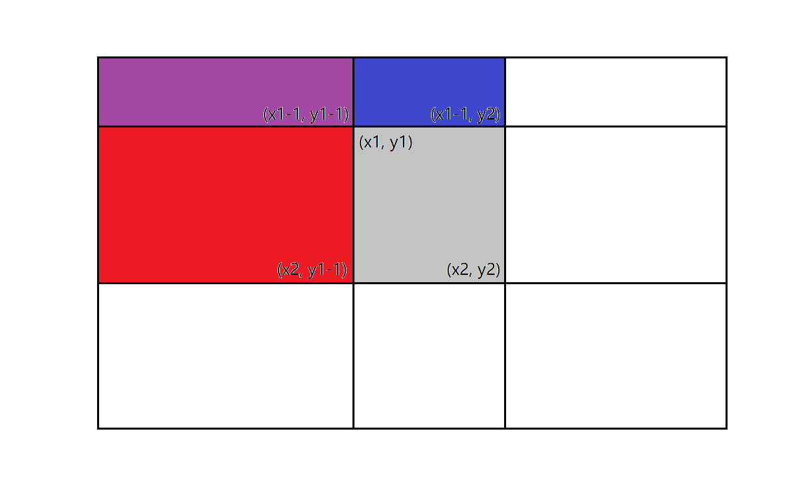

题目来源：https://codeforces.com/contest/1107/problem/D
提交次数：2/2
题意
给定一个n*n的01矩阵A，定义A的x-压缩矩阵B为n/x * n/x大小的矩阵，且对于i∈[1,n],j∈[1,n]，有
A[i][j]=B[⌈xi⌉][⌈xj⌉]
显然必须要求x整除n，且A中映射到B中同一位置的不同元素必须相等。问x的最大值是多少。
分析
这道题我比赛的时候看错题了。不过其实它并不是很难。显然有
B[i][j]=A[(i−1)x+1...x][(j−1)x+1...x]
[soln1]: Codeforces Blog - Quick unofficial editorial for Educational Round 59 (Div. 2)
[soln2]: Codeforces Blog - Educational Codeforces Round 59 Editorial
比较简单的解法1
显然每个B[i][j]都对应A中的一块矩形区域。那么就直接查看A中的这些矩形区域是否都为0或者都为1。但是这样做的话，每个x需要的复杂度是n^2，很可能太慢了。（事实上并不慢，因为x的总数是σ(n)，它的一个显然的上界是n。）
不过还是可以做点优化的，求出包含A中左上元素的每个矩形的面积，然后就可以用它们加加减减来求出任何矩形的面积了。然后就可以直接判断每个矩形是否为全0或全1了……

上图中：
Area(x1, y1, x2, y2) = S[x2][y2] - S[x2][y1-1] - S[x1-1][y2] + S[x1-1][y1-1]
对于每个x，一共有(n/x)2个矩形需要考虑。由于
x∣n∑(n/x)2=n2x∣n∑1/x2<n2x=1∑+∞1/x2=n2π2/6
因此这个方法的复杂度是O(n^2)。[soln1]
更复杂一些的解法2
这种方法更巧妙（不过大概也更难想到）。
- 找出矩形中每一行中所有连续的0或1线段的长度的最大公约数
- 对矩形的每一列同样求最大公约数
- 则该最大公约数就是所求x
如果矩形能被压缩，则显然上述条件是满足的。从上述条件推出能被压缩也是比较简单的：首先将每一行压缩成n/x个点，然后再对列进行压缩即可。[soln2]
代码
解法1
1
2
3
4
5
6
7
8
9
10
11
12
13
14
15
16
17
18
19
20
21
22
23
24
25
26
27
28
29
30
31
32
33
34
35
36
37
38
39
40
41
42
43
44
45
46
47
48
49
50
51
52
53
54
55
56
57
58
59
60
| #include <iostream>
#include <cstdio>
using namespace std;
bool matrix[5205][5205];
int colSum[5205][5205];
int sum[5205][5205];
int n;
int getSum(int lr, int lc, int rr, int rc) {
int s11 = sum[lr-1][lc-1];
int s12 = sum[lr-1][rc] - s11;
return sum[rr][rc] - s12 - sum[rr][lc-1];
}
int main() {
cin >> n;
char c;
for (int i = 1; i <= n; i++) {
for (int j = 0; j < n / 4; j++) {
scanf(" %c", &c);
int x = '0' <= c && c <= '9' ? c - '0' : c - 'A' + 10;
matrix[i][j*4 + 1] = (x & 8) > 0;
matrix[i][j*4 + 2] = (x & 4) > 0;
matrix[i][j*4 + 3] = (x & 2) > 0;
matrix[i][j*4 + 4] = (x & 1) > 0;
}
}
for (int i = 1; i <= n; i++) {
for (int j = 1; j <= n; j++) {
colSum[i][j] = colSum[i-1][j] + matrix[i][j];
}
}
for (int i = 1; i <= n; i++) {
for (int j = 1; j <= n; j++) {
sum[i][j] = sum[i][j-1] + colSum[i][j];
}
}
for (int x = n; x >= 1; x--) {
if (n % x != 0) continue;
bool ok = true;
for (int i = 1; i <= n; i += x) {
for (int j = 1; j <= n; j += x) {
int s = getSum(i, j, i + x - 1, j + x - 1);
if (!(s == 0 || s == x * x)) {
ok = false;
break;
}
}
if (!ok) break;
}
if (ok) {
cout << x << endl;
return 0;
}
}
return 0;
}
|
解法2
1
2
3
4
5
6
7
8
9
10
11
12
13
14
15
16
17
18
19
20
21
22
23
24
25
26
27
28
29
30
31
32
33
34
35
36
37
38
39
40
41
42
43
44
45
46
| #include <iostream>
#include <cstdio>
using namespace std;
bool matrix[5205][5205];
int n;
int gcd(int a, int b) {
if (b == 0) return a;
return gcd(b, a % b);
}
int main() {
cin >> n;
char c;
for (int i = 1; i <= n; i++) {
for (int j = 0; j < n / 4; j++) {
scanf(" %c", &c);
int x = '0' <= c && c <= '9' ? c - '0' : c - 'A' + 10;
matrix[i][j*4 + 1] = (x & 8) > 0;
matrix[i][j*4 + 2] = (x & 4) > 0;
matrix[i][j*4 + 3] = (x & 2) > 0;
matrix[i][j*4 + 4] = (x & 1) > 0;
}
}
int ans = n;
for (int i = 1; i <= n; i++) {
int start = 1;
for (int j = 2; j <= n + 1; j++) {
if (j > n || matrix[i][j] != matrix[i][j-1]) {
ans = gcd(ans, j - start);
start = j;
}
}
}
for (int i = 1; i <= n; i++) {
int start = 1;
for (int j = 2; j <= n + 1; j++) {
if (j > n || matrix[j][i] != matrix[j-1][i]) {
ans = gcd(ans, j - start);
start = j;
}
}
}
cout << ans << endl;
return 0;
}
|